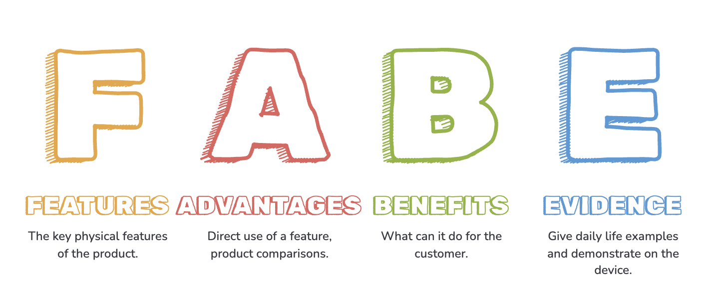
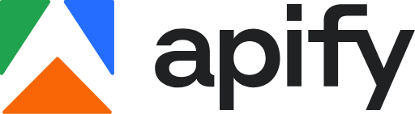
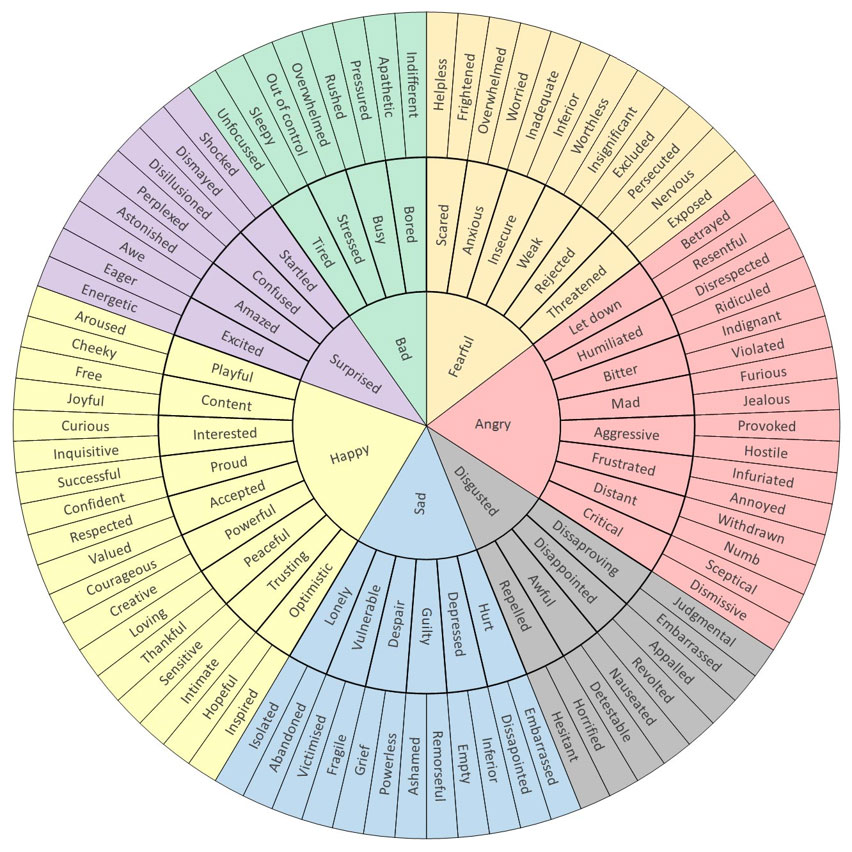

How I Built an AI‑Powered Lead Prospecting Engine for BioMeBar
Building a lead prospecting engine sounds straightforward: identify companies that could be a good fit, find the right person, and reach out. In practice, each of these steps had its own challenges. Here's how I approached them and what I learned along the way.
Start with Product-Market Fit
Before selling our moat and USP, we needed to be clear on what made BioMeBar different and whether that differentiation still held up.
We conducted a competitive analysis and documented product features in a Feature Advantage Benefit Evidence format. This helped us understand how competitors had evolved, identify new competitors, and sharpen how we positioned BioMeBar to prospective partners and customers.

We also conducted mystery shopper research to understand the customer experience. The differences were stark: some competitors regularly followed up and kept me engaged, while others called once and then went silent.
This gave us a clearer understanding of both the competitive landscape and what a good customer experience looked like.
Defining the Right Leads
Once we were confident about our moat and USP, we started working on our Ideal Partner Profile.
We looked at previous leads that had converted and analysed the traits they had in common. We then used keywords in

to generate a list of companies that could potentially be contacted.But keyword matching wasn't enough.
It did not account for the other factors that made a company a good fit. So, I built a custom skill on Claude that defined the characteristics of a good lead, along with what made a bad lead and should be excluded.
The outputs initially looked good, but when I started validating them, I found several issues:
- Outdated company informationClaude sometimes relied on old information that was still available on Google, even though the company's direction had changed.
- Incorrect founder detailsIt could identify a founder from an old page even though they had since left the company.
- Missing contact detailsFounder names and LinkedIn profiles were sometimes missed even when they were easily discoverable through a simple web search.
- Wrong fitThe results sometimes included direct competitors or very large companies that were unlikely to collaborate.
Getting an answer from AI does not mean getting a verified answer.
Adding a QA Layer
To tackle these issues, I built a QA skill that assumed every field might be wrong and re-verified it through a fresh web search.
It contained 10 explicit rules for what needed to be checked, each with examples of misses that had occurred previously. Here is one of them:
- Is it too big?
- Reachable-founder test: Would a founder personally read a LinkedIn message?
- 100+ locations, large funded consumer brands, corporate ownership → REJECT
- Real cases: [examples of such companies were listed here]
This additional layer gave us a more consistent and reliable list of companies and founders.
But finding the right people was only half the problem.
The Personalisation vs. Scale Problem
At Accenture, I had worked with personalisation in several ways: dynamic content, send-time optimisation, engagement frequency, and journeys based on customer interactions.
Cold outreach was different.
There was no previous customer data to work with, and our initial messages had a reply rate of just 10%.
We experimented with the emotion wheel, thinking about what emotion we wanted to evoke from the partner and building different versions of messages around it.

We also explored ways to make AI-generated messages feel less generic, including a Deslopify skill found on GitHub.
But the bigger insight was around relevance.
There is always a greater chance of someone responding when the message feels like it was actually written for them. We wanted the lead to feel that we knew who they were, appreciated the work they were doing, and had a solution that could genuinely benefit them.
This meant going beyond simply adding someone's name to a template.
Building the Outreach Engine
I built a custom outreach skill for Claude that incorporated:
- The founder's tone and writing style
- The emotion we wanted the lead to feel: curiosity and enthusiasm
- Something relevant the person had posted about or the company was working on
- The specific value BioMeBar could bring to them
The goal wasn't to make AI write a generic personalised message. It was to make the message demonstrate that we had actually looked at the person, understood what they were doing, and had a reason for reaching out.
Because this was a high-stakes process, it still required a human-in-the-loop approach. The messages were generated and kept ready, but a quick review was necessary to make sure the model wasn't hallucinating details or being too vague.
The Result
More importantly, many leads specifically complimented our cold messages.
The workflow became:
- Company discovery
- ICP filtering
- AI research
- QA verification
- Personalised outreach
- Human review
The skills ran regularly during a coworking session and produced a sheet that I could work from, turning what had initially been a manual process into a repeatable lead prospecting engine.
| A | B | C | D | E | F | G | H | I | J | K | L | M | N | O | P | Q | R | S | T | U | |
|---|---|---|---|---|---|---|---|---|---|---|---|---|---|---|---|---|---|---|---|---|---|
| 1 | BioMeBar — Qualified Outreach & Tracking Master | IBS (GI Clinics) · Acidity/Bloating/GLP-1 · Women's Health | ||||||||||||||||||||
| 2 | |||||||||||||||||||||
| 3 | # | Name | Type | Relevance | Relevance Reason | Location | Lead Doctor / Founder | Founder Category | Description of Company | Company LinkedIn | Why Partner (specific) | Founder LinkedIn | Mobile / Phone | Personalised Message | References | Data Confidence | Connection Sent? | Accepted? | Message Sent? | Replied? | |
| 4 | 1 | IBS (GI Clinics) | Not Relevant | Website not functional - no recent posts | Delhi | Business + Clinical | is a doctor-founded health & wellness brand specializing in science-backed, plant-powered supplements… | https://www.linkedin.com/company/ | Their clinical or gut-health work maps directly to BioMeBar's IBS, bloating, and synbiotic protocol; a referral, pilot, or co-created education partnership is a natural fit. | https://in.linkedin.com/in/ | Hi team, I spent some time on the range before writing this… | MEDIUM — company profile verified; founder not found | No | ||||||||
| 5 | 2 | IBS (GI Clinics) | Not Relevant | Too small, no recent posts, website not maintained | Noida | Business + Clinical | is a healthcare practice specializing in personalized, integrative therapies for Gut Health, Hormonal Balance… | https://www.linkedin.com/company/ | Their clinical or gut-health work maps directly to BioMeBar's IBS, bloating, and synbiotic protocol; a referral, pilot, or co-created education partnership is a natural fit. | https://in.linkedin.com/in/ | Hi team, I came across your holistic, whole-person approach to health in Noida… | MEDIUM — company profile verified; founder not found | No | ||||||||
| 6 | 3 | IBS (GI Clinics) | Relevant | Clear BioMeBar overlap through gut, IBS/bloating, metabolic, or women's-health use case. | Delhi | Business | is a Healthcare Management Consulting in 360 Degree in various Verticals of the Healthcare in Digital Health… | https://www.linkedin.com/company/ | Their clinical or gut-health work maps directly to BioMeBar's IBS, bloating, and synbiotic protocol; a referral, pilot, or co-created education partnership is a natural fit. | https://www.linkedin.com/in/ | Hi , Good to connect. 's work across its Digital AI Health platform… | https://in.linkedin.com/posts/, https://www.… | HIGH | Yes | Yes | Yes | |||||
| 117 | 114 | Women's Health | Relevant | Clear BioMeBar overlap through gut, IBS/bloating, metabolic, or women's-health use case. | Bangalore | Business | is a Women's Health target in Bangalore. Current verified contact context: Co-founder & CEO | https://www.linkedin.com/company/ | Perimenopause gut decline = unowned story | https://in.linkedin.com/in/ | Hi , I came across and was struck by how closely our missions align… | https://www.instagram.com/p/, https://www.… | HIGH | Yes | Yes | Yes | Yes | ||||
| 130 | 127 | Acidity / Bloating / GLP-1 | Relevant | Clear BioMeBar overlap through gut, IBS/bloating, metabolic, or women's-health use case. | Mumbai | Business + Clinical | is a Acidity / Bloating / GLP-1 target in India. Current verified contact context: Founder / ; LinkedIn not confirmed | https://www.linkedin.com/company/ | Gut intervention for diabetes pilot | https://www.linkedin.com/in/ | Hi , I spent some time on before writing this… | https://www.linkedin.com/in/ — post “” (~5mo ago) + post on building a metabolic wellness ecosystem beyond one product (~4mo ago) | HIGH | Yes | Yes | Yes | Yes | ||||
| 131 | |||||||||||||||||||||
| 132 | |||||||||||||||||||||
What I Learned
The biggest learning for me was that building an AI-powered workflow isn't about getting AI to do everything.
It's about figuring out where AI is good, where it fails, and where human judgement needs to remain in the loop.
For us, each layer solved a problem exposed by the previous one:
- Keywords
- AI qualification
- QA
- Personalised outreach
- Human review
We started with a simple goal: find the right companies and the right people. By the end, we had a process that made this much easier and faster.